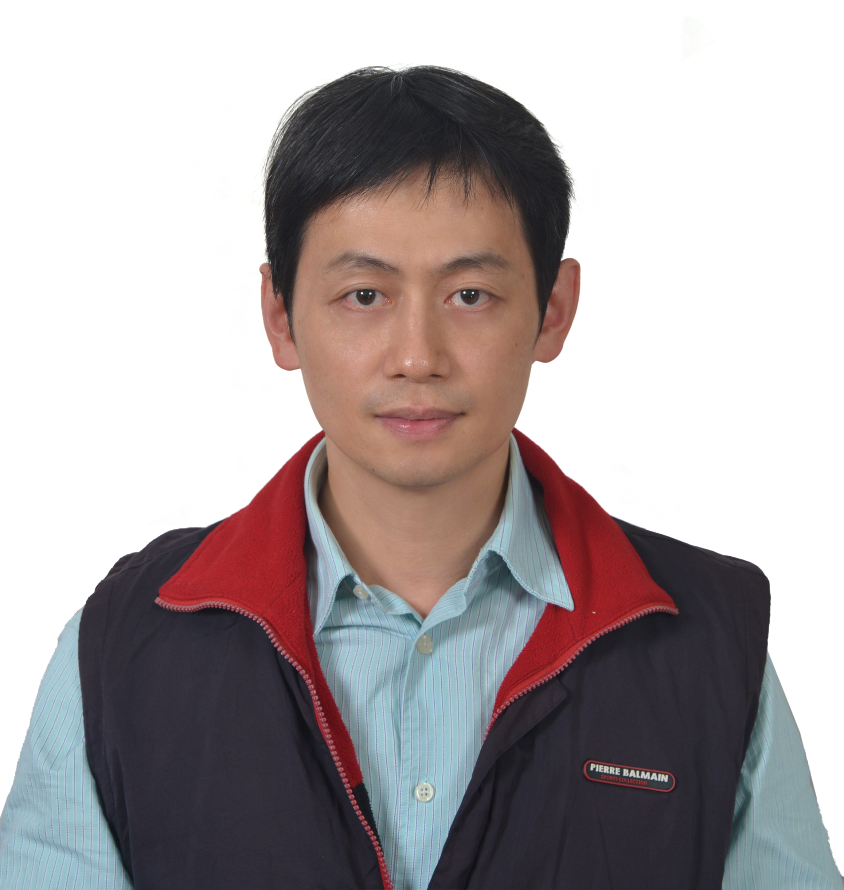

Associate Professor · General Education Center
National Chung Hsing University (NCHU), Taiwan
I am an Associate Professor at the General Education Center of National Chung Hsing University (NCHU), Taiwan, with over 19 years of teaching experience in Information Management and General Education.
My work focuses on integrating technology into curriculum design, fostering computational thinking, creativity, and information literacy. I am passionate about supporting professional development for college and graduate students through innovative pedagogical approaches.
I have led numerous projects funded by the National Science and Technology Council (NSTC) and the Ministry of Education (MEd), and have received two Executive Excellence Awards from the Ministry of Education.
General Education Center, NCHU
General Education Center, NCHU
Graduate School of Engineering Science, NJU
Guided 4 in-service teachers in developing school-based curriculum and published 5 conference papers.
NJU
Directed center affairs and received one Executive Excellence Award from the Ministry of Education.
General Education Center, National Kaohsiung Normal University
Taught Information and Society, Network and Instruction courses; assisted with university evaluation.
NJU
Built a distance learning system, assisted university evaluation, and received one Executive Excellence Award from the Ministry of Education.
NJU
Researched and planned engaging lessons for classroom and distance learning. Guided one graduate student to complete a mathematics logic interactive learning system with RFID technology. Led two MOST projects promoting information literacy.
NJU
Taught programming and creative design using computer software and multimedia technologies. Guided 4 college students to complete a 3D project and published one international conference paper.
Principal Investigator (unless noted)
NT$ 45,000
NT$ 65,000
NT$ 477,569
NT$ 33,000
NT$ 2,750,000
Co-PINT$ 2,750,000
Co-PINT$ 380,044
NT$ 59,000
NT$ 800,000
Co-PINT$ 172,000
NT$ 235,100
NT$ 100,000
NT$ 650,000
Co-PINT$ 1,570,000
Tsai, C. Y., Chen, Y. A., Hsieh, F. P., Chuang, M. H., & Lin, C. L. (2024). Effects of a programming course using the GAME model on undergraduates' self-efficacy and basic programming concepts. Journal of Educational Computing Research, 62(3), 702–724.
Tsai, C. Y., Shih, W. L., Hsieh, F. P., Chen, Y. A., & Lin, C. L. (2022). Applying the design-based learning model to foster undergraduates' web design skills: The role of knowledge integration. International Journal of Educational Technology in Higher Education, 19, 4.
Tsai, C. Y., Shih, W. L., Hsieh, F. P., Chen, Y. A., Lin, C. L., & Wu, H. J. (2022). Using the ARCS model to improve undergraduates' perceived information security protection motivation and behavior. Computers & Education, 181.
Lin, C. L., & Tsai, C. Y. (2021). The effect of a pedagogical STEAM model on students' project competence and learning motivation. Journal of Science Education and Technology, 30, 112–124.
Lin, C. L. (2018). The development of an instrument to measure the project competences of college students in online project-based learning. Journal of Science Education and Technology, 27(1), 57–69.
Lin, C.-L., & Tsai, C. Y. (2020). The gender difference of learning perception in the flipped teaching of high school technology curriculum. Chinese Journal of Science Education, 28(1), 1–23.
Lab / Instruction Site
mti.nchu.edu.twInstitution
General Education Center
National Chung Hsing University
Taichung, Taiwan